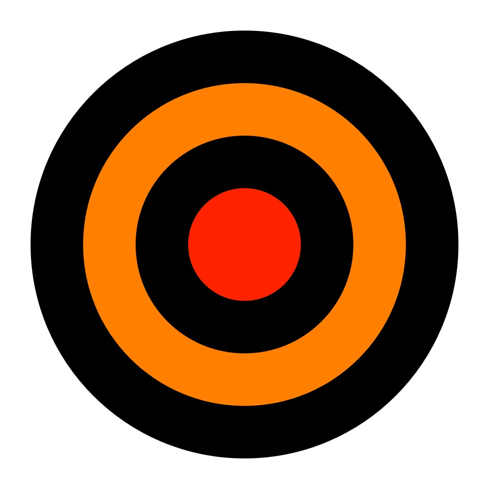

Dart Scoreboard Pro
The fast, simple dart scoreboard. Cricket, Wild Card Cricket, 301–2001, and Shanghai — open the app and start throwing.


Made for the throw line
Big buttons, readable from a step back, built to score a real game at real speed.
Why players like it
No accounts, no clutter — just a scoreboard that keeps up with the game.
Fast scoring
One tap for a single, doubles and triples a press away. No fiddly menus between throws.
Every pub game
Cricket, Wild Card Cricket, 301 through 2001 with double in/out, and Shanghai — with custom target numbers.
On your wrist
A fully independent Apple Watch app: score an entire game without touching your phone.
On the big screen
AirPlay to an Apple TV and give everyone a scoreboard they can read from across the room.
Everything a scoreboard should do
1–5 players
Solo practice or the whole crew — player names, turn order, and per-player marks.
All the cricket variants
Standard, points, cut-throat, and Wild Card Cricket with rotating numbers.
Custom target numbers
Pick your own Cricket and Shanghai numbers for practice or house rules.
Double in, double out
Full x01 rules, with checkout suggestions when you’re on an out.
Stats and history
Game history and player statistics, kept on your device.
Undo anything
Mis-taps never stick — undo removes the last throw instantly.
Sounds and announcer
Optional sound effects and an announcer to call the action.
No subscription
$1.99 once. No ads, no accounts, nothing recurring.
About the developer
Jon Hill
Developer
My name is Jon and I like to play darts. I built Dart Scoreboard Pro because I was frustrated with the buggy, overly complex dart apps in the App Store — I wanted something anyone could open and start playing immediately. More than a decade later, that’s still the whole idea.
Frequently asked questions
Cricket (standard, points, and cut-throat), Wild Card Cricket with rotating numbers, x01 games from 301 to 2001 with optional double in and double out, and Shanghai. Cricket and Shanghai also support custom target numbers.
One to five players per game, with names and automatic turn order.
No — it’s fully independent. You can start, score, and finish games right on the watch, and everything syncs back up when your phone is around.
Yes — use AirPlay to an Apple TV and the scoreboard is visible across the room.
Undo removes the last throw instantly — mistakes never stick.
$1.99, one time. No ads, no accounts, no subscription.
Email dartscoreboardpro@gmail.com — I read everything.
Ready to throw?
Grab Dart Scoreboard Pro on the App Store and be scoring in seconds.